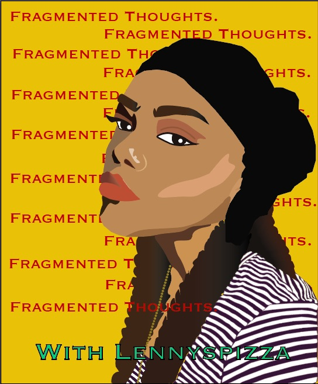

Hi, Im Lyniesha and Welcome to My Digital Expansion
Take a look into my 2020-2021 digital journey and exploration by reflecting on my years using Tumblr and brief experience with WordPress in 2019.
Intro
Hi! I'm Lyniesha (friends call me Lenny) and welcome to my digital journey.
Here, I reflect on my digital practices and how they contribute to my digital authoring.
This includes looking at my longest digital practice; Tumblr and a new practice that poses
more of a challenge; WordPress. While my first WordPress remains in the digital graveyard
for discarded accounts, you can check out my new blog, Lennyspizza
WRIT 3001
In the winter semester of 2021, I enrolled in WRIT 3001: Digital Authoring. The course introduced me to ways that I could further my writing and composing by exploring digital compositions. Before this, I don't think I gave much thought to how I can incorporate my writing with digital mediums but by creating the sonic and video essay I was pushed to see how I can write and compose on a digital landscape. The process wasn’t easy but it was enlightening and showed me ways that I can further transform my writing from off the page to on the screen.
Sonic Essay
Looking back now, the sonic essay was a very meta experience. While reflecting on my digital journey
with Tumblr and WordPress, I was also relearning audio editing with SoundTrap. My first experience with
audio was with Audacity for a podcast assignment. The experience was a bit difficult and fustrating but
it taught me patience and persistent that I was able to use with SoundTrap. In the end, these experiences
furthered my digital expansion.
Transcript
(Calisson begins to play)
(Sounds of computer mouse clicking followed by computer trash bin being emptied) As a writer, I struggled with finding my voice on different digital platforms. My
longest-running digital footprint is a Tumblr blog I created in 2011. I was 14 and looking for a platform that could offer some escape from Twitter and Facebook. I found Tumblr at what seemed like the right time. I discovered a platform
where I could write, post images or just reblog content to match the theme of my blog.
(Clicking fades out to the song, Donnalee. Sounds of a pencil writing on paper) But I’ll be honest, I’m more of a pen and paper sort of composer. I can fill the blank pages of a new journal with random thoughts,
unfinished stories or random doodles. (Music and sound effects stop) But my imagination and creativity always felt blocked on a digital platform. (Fade in Jodon) Part of the difficulty came with
understanding the demands of a new platform so, it was no surprise to me that I returned to Tumblr at my first failed attempt at WordPress in 2019.
At the time, WordPress was a new digital landscape that I was not used to or comfortable with. As people and not just writers, we go where we are comfortable.(Music stops) However,(computer mouse clicking fades
in, Plasticity begins to play) learning the layout of a new digital platform did open my eyes to my own limitations and mental block that affect my writing. I had to not only deliver my own content and voice with WordPress but
also develop an eye for formatting, style, and display; a few concepts that Tumblr’s mobile app completed for me.
Tumblr not only made easy for me to use the app and website, (music and sound effects pauses) but it also made me invisible (Music continues) and then it connected me to people who also share that
ability. It was like sitting in a very comfortable silence with the occasional conversation popping up from other users. The community is what brought me back each time. I enjoyed how low maintenance owning a Tumblr blog was. So,
venturing off into a new platform also meant exploring and learning the discourse of that community, which in the beginning, (music stops) I don’t think I was prepared for.
(sound of computer trash bin being cleared again) (madness fades in the background. Keyboard typing) I can reflect back now and honestly say that I stood in my own way and was impatient
with learning the new platform. My expectations were too high and fell so low when I eventually deleted my WordPress account. I neglected, procrastinated and avoided all forms of productivity because mentally I wasn’t ready to start all
over.
(Madness stops, the song Jumbel begins to play) My experience with WordPress taught me that starting over, turning over a new leaf, or trying something new is appealing in theory; but when I began the process, I
couldn’t help but feel isolated on a platform filled with millions of users. Because this platform was new and I had already spent 8 years on Tumblr, the blog was forgotten in the land of abandoned accounts.(song stops)
Despite that, (Coronea fades in) I’m returning back to WordPress this year and I’m feeling good about starting over this time. I’m honestly more equipped and ready to work with this platform because I’m not looking to
replace something that I already know, (Keyboard typing fades in and out) I’m just looking to explore and develop my writing style and creativity. Much like the act of writing – or creating anything for that matter --
progress comes with a string of revision and editing; and it also comes with the mindset that what is created is not finite. (Cornea fades out)
Video Essay
Video essays are my favourite type of YouTube videos. So creating one was, not only a lot of fun, but also served as a preview to contributing to a community that I admire. Stepping out of the shadows of the viewer into the shoes of
the creator was a nice change in scenerio. I hope you all watch and enjoy the video!
Transcript
TIME
VISUAL
AUDIO
(0:00-0:04)
The screen opens to my WordPress page, followed by a computer trash bin being emptied.
Calisson begins to play. Sounds of computer a mouse clicking followed by the sound of a computer trash bin being emptied.
(0:05-0:07)
(cut to Wordpress homepage) Tumblr archive from October 2011)
As a writer, I struggled with finding my voice on different digital platforms.
(0:08-0:21)
(Cut to Tumblr 2011-2012 archives)
My longest-running digital footprint is a Tumblr blog I created in 2011. I was 14 and looking for a platform that could offer some escape from Twitter and Facebook. I found Tumblr at what seemed like the right time
(0:22-0:30)
(Cut to Tumblr dashboard)
I discovered a platform where I could write, post images or just reblog content to match the theme of my blog.”
(0:31-41)
(Shots of me writing in a small note pad)
(Clicking fades out to the song, Donnalee. Sounds of a pencil writing on paper) But I’ll be honest, I’m more of a pen and paper sort of composer. I can fill the blank pages of a new journal with random thoughts,
unfinished stories or random doodles.
(0:42-0:52)
(cut to buffering screen)
(Music and sound effects stop) But my imagination and creativity always felt blocked on a digital platform. (Fade in Jodon) Part of the difficulty came with understanding the demands of a new
platform,
(0:52-0:57)
(Dissolve to Tumblr desktop displaying my dashboard)
so it was no surprise to me that I returned to Tumblr at my first failed attempt at WordPress in 2019.
(0:58-1:04)
(Cut to beginner’s page of WordPress)
At the time, WordPress was a new digital landscape that I was not used to or comfortable with
(1:05-1:09)
(Cut to cartoon gif)
As people and not just writers, we go where we are comfortable.
(1:10-1:17)
(Title screen: However)(Cut to a close up of drafts on WordPress)
(Music stops) However,(computer mouse)clicking fades in, Plasticity begins to playlearning the layout of a new digital platform did open my eyes to my own limitations and mental block that affect
my writing.
(1:18-1:30)
(Cut to my blog preview page for “The Artist & The Muse” draft post;speech bubble pop up)
I had to not only deliver my own content and voice with WordPress but also develop an eye for formatting, style, and display; a few concepts that Tumblr’s mobile app completed for me.
(1:31-1:39)
(dissolve to Tumblr mobile app, then a slide up to black screen followed by fade in Tumblr mobile screen)
Tumblr not only made it easy for me to use the app and website,(music and sound effect pauses)(whispers) but it also made me invisible,(music continues)
(1:40- 1:57)
(Slide to Tumblr Dashboard)
and then it connected me to people who also share that ability. It was like sitting in a very comfortable silence with the occasional conversation popping up from other users. The community is what brought me back each time. I
enjoyed how low maintenance owning a Tumblr blog was.
(1:58-2:06)
(slide to “Writing in A Dark Room” WordPress Post, scroll down to the first comment on a recent post)
So, venturing off into a new platform also meant exploring and learning the discourse of that community, which in the beginning,(music stops)
(2:07-2:09)
(cut to black screen then to a file being dragged into the trash)
I don’t think I was prepared for.(computer trash bin sound)
Before You Head Out
Congratulations on making it to the end of my digital journey. While it was short, I find completing anything to be an accomplishment.
Finishing this website is an accomplishment but it doesnt stop here. There is plenty to read and discuss on my website, which
is still a working process. That's one thing about me, I'm always working on something.
Recently, I started tinkering with adobe illustrator. I'm just starting out but I think mentioning it highlights that although this part
of my digital journey (this specific website) is technically over, my expansion continues. Like I said before, this experience is very
meta.
Here's What I Created In Adobe Illustrator

This poster was created with my blog in mind including the forgotten ones. This is my first attempt using a software that I had no experience with prior to this
and it seems fitting to conclude with this poster. It highlights that there is more to come with my digital journey and, that this journey is not limited to
just writing. My journey expands past writing my sonic essay and composing my YouTube video. It reaches platforms that I feel alien to and approaches the situation
with an open mind that what I create can always be revised.
So, What's Next?
Honestly, I've been playing around with the idea of what to do next. I enjoyed incorporating my writing through these digital mediums, so the idea of starting a
YouTube channel or a podcast with an actually theme doesnt seem too far out of reach. Along with adobe illustrator, I want to try after effects and see what I
can animate there. I'm also considering learning more coding. One thing for certain is that I will continue to add to my WordPress and developing my blog.
Catch me on Lennyspizza, where you can get a slice of my fragmented thoughts.